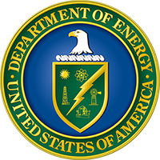
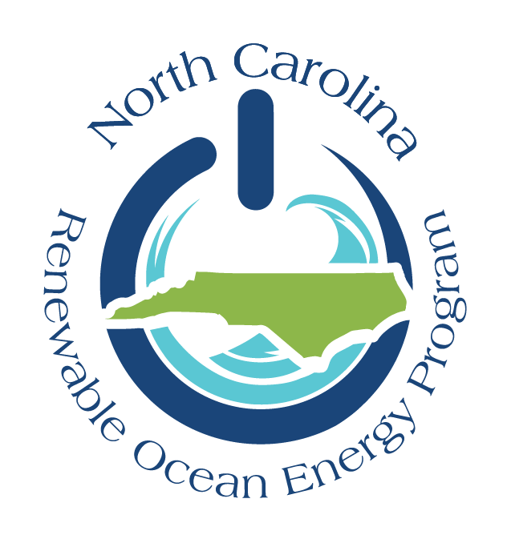

Grants & research support
Sponsored projects I have contributed to in energy planning, uncertainty, and infrastructure resilience.
Federal research support

Research support
Uncertainty assessment for U.S. power system planning
U.S. Department of Energy · Grid Deployment Office, through NREL · 2024–2026
Role: Model developer and first author of the resulting paper.
This DOE-supported research examined how uncertainty in demand, costs, fuel prices, and renewable siting affects U.S. electricity investment through 2050. I contributed to automated ReEDS modeling workflows and the analysis of generation, storage, and transmission outcomes. The resulting PMAPS paper compares 1,137 simulations to distinguish consistent investment trends from outcomes that depend strongly on input assumptions and policy choices, helping planners interpret the range of possible futures.
Research support
Urban Flooding Open Knowledge Network (UF-OKN)
National Science Foundation · Convergence Accelerator Phase II · 2020–2024
Award: #2033607 · Total multi-institution funding: $5,299,998
Lead institution: University of Cincinnati · PI: L. Yeghiazarian · NC State Co-PI: S. Arumugam
Role: Graduate researcher in flood-informed routing optimization and risk assessment.
UF-OKN connects flood information with decisions about urban infrastructure resilience. My contribution linked stormwater simulations with route optimization to assess how road access changes during a flood. The Wilmington, North Carolina, case study examined Hurricanes Florence, Dorian, and Matthew, identifying critical connections and neighborhoods that could become isolated. The work provides a way to assess disruptions across the road network, including loss of access to areas whose roads remain dry.
North Carolina Renewable Ocean Energy Program
These NCROEP awards supported a sequence of projects on offshore renewable investment, device design, shared infrastructure, and hurricane vulnerability.

NCROEP
Fused Portfolio Optimization for Harnessing Marine Renewable Energy Resources: Exploring Opportunities for Improving Energy Density and Levelized Cost of Electricity
North Carolina Renewable Ocean Energy Program · FY2023–2024
Funding: $50,000 · PI: A.R. de Queiroz
Role: Graduate researcher, student mentor, and contributor to proposal writing.
This award extended earlier work on device design and site selection to explore how offshore wind and ocean-current projects could deliver more electricity through shared infrastructure. The research combined wind turbines and underwater kites in a portfolio model that selects devices and locations within a cost limit. Accounting for transmission capacity and generation that cannot be delivered to shore helps compare the cost and energy output of alternative deployments.
Exploring the Feasibility of Co-Located Marine Renewable Energy Systems: A Mooring System and Economic Analysis in the North Carolina Coast
North Carolina Renewable Ocean Energy Program · FY2023–2024
Funding: $50,000 · PI: A.R. de Queiroz
Role: Graduate researcher and contributor to proposal writing.
This award supported an assessment of whether offshore wind farms and wave devices could share space, anchors, and transmission cables. The work combined engineering analysis of mooring arrangements with optimization of device locations and generation portfolios. It examined how design requirements, shared infrastructure, and future wave technology costs affect the value of combining the resources, linking technical feasibility with investment decisions along the North Carolina coast.
Fused Portfolio, Site, and Device Sizing Optimization for Harnessing North Carolina’s Coastal Renewable Energy Resources
North Carolina Renewable Ocean Energy Program · FY2022–2023
Funding: $57,000 · PI: C. Vermillion
Role: Graduate researcher and contributor to proposal writing.
This award supported models that connect marine energy device design with technology selection and siting. I developed optimization tools to compare deployment options using local resource conditions and costs. The research linked feasible underwater-kite designs with portfolio decisions, allowing device choices to reflect the conditions at each location. It provided a foundation for the subsequent NCROEP project on energy density and electricity delivery through shared transmission infrastructure.
Mooring System Analysis and Fragility Curve Estimation: The Economic Impact of Low Probability High Impact Events on Ocean Current Devices
North Carolina Renewable Ocean Energy Program · FY2022–2023
Funding: $52,923 · PI: M.A. Gabr
Role: Graduate researcher and contributor to proposal writing.
Building on the earlier hurricane-risk project, this award supported a closer examination of mooring design under rare, severe ocean conditions. Bayesian analysis of wind and current measurements was combined with mechanical simulations to estimate when loads could exceed a mooring system’s operating limits. The related research shows why rapid changes in currents matter for vulnerability, providing estimates that can inform device design and economic risk assessment.
Assessing the Risk of Hurricane Damage to Marine Hydrokinetic Devices
North Carolina Renewable Ocean Energy Program · FY2021–2022
Funding: $59,728 · PI: J.F. DeCarolis
Role: Graduate researcher and contributor to proposal writing.
This award supported research on how hurricanes could damage marine energy devices operating below the sea surface. The project brought together ocean observations, statistical analysis, and mechanical modeling to assess the loads on moorings that hold devices in place. It established a basis for estimating vulnerability from environmental conditions and informed the subsequent NCROEP project on mooring design, fragility curves, and economic risk.
Analyzing Investments in NC Offshore Renewable Energy Under Uncertain Resource Availability and Hurricane Damages
North Carolina Renewable Ocean Energy Program · FY2020–2021
Funding: $38,236 · PI: J.F. DeCarolis · Co-PI: A.R. de Queiroz
Role: Graduate research assistant named in the proposal.
This project supported planning methods for two sources of offshore investment risk: variable renewable generation and damage from hurricanes. My work used scenario generation and stochastic optimization to study technology portfolios and site selection. The related portfolio study targets performance during periods of low generation, while the hurricane modeling examines how damage to infrastructure could change North Carolina’s electricity investments.
Optimizing Investments in NC Offshore Renewable Energy
North Carolina Renewable Ocean Energy Program · FY2019–2020
Funding: $32,420 · PI: J.F. DeCarolis · Co-PI: A.R. de Queiroz
Role: Graduate research assistant.
This award supported an assessment of how offshore wind, wave, and Gulf Stream currents could contribute to North Carolina’s electricity supply. I developed portfolio models to compare site choices, generation costs, and the variability of combined output. Evaluating those portfolios in the TEMOA electricity planning model helped estimate their value to the wider system and the cost reductions needed for deployment. The work provided a foundation for later NCROEP studies of uncertainty, device design, and shared infrastructure.